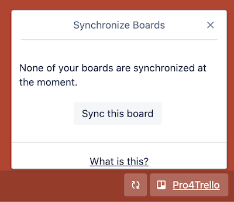

Pro4Trello rushes to v3.3
We're handling a big issue for some users.
1. WHAT'S CHANGED?
1.1 ALL SETTINGS ARE NOW STORED LOCALLY
We've all been enjoying the fact that our settings work accross all our Chrome browsers...until it stopped working (for some of us). Turns out Chrome sync storage is extremely limited and it's actually fairly easy to overflow it when you're using Pro4trello for many boards.
The first step was to push all settings back to Chrome local storage, which is exponentially larger. Chrome Store didn't allow Pro4trello to use unlimited storage so we'll cross that bridge if/when we get there, for now it seems there's plenty.
1.2 SYNC UP TO 5 BOARDS ACCROSS BROWSERS
You can now synchronize up to 5 boards accross all your Chrome browsers.

Look for the sync icon in your bottom right corner, next to the Pro4Trello icon and click to open your sync menu.

Please have in mind that this is a temporary solution! Read below for more info :)
2. WHAT'S NEXT?
So glad you asked!
Since being able to sync settings accross all Chrome instances is like super relevant and a great thing Pro4Trello had since day one, we'll work to build the sync by leveraging Google Drive. The idea comes from this: in order to use sync up until this point, you had to be logged in to Chrome, which means you have a Google account, which means you have Google Drive :)
That being said, the idea is to have you authorize Pro4Trello to write all your settings into a folder in your Google Drive. Boom, problem solved!
Hint: this might actually unlock the potential for buliding sync between different users (for specific boards), so that you don't have to import and export settings to share within your team or organization.